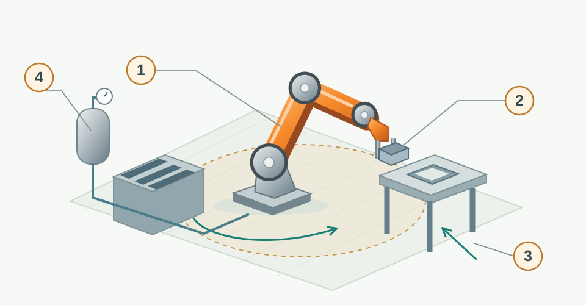
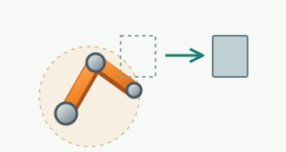
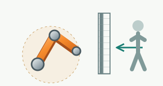
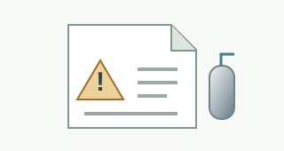
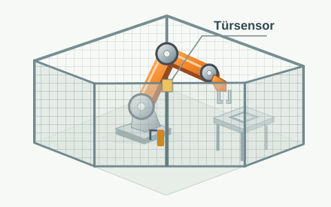
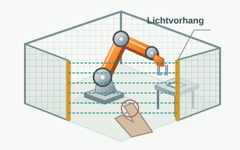
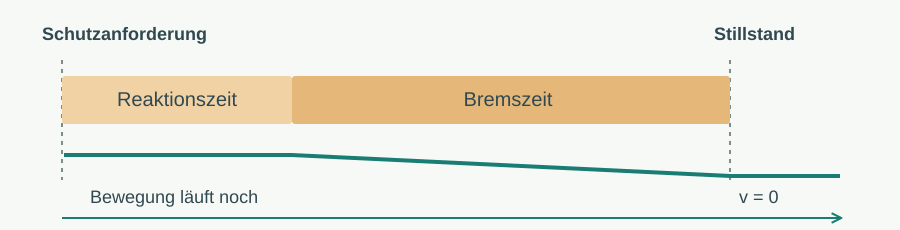
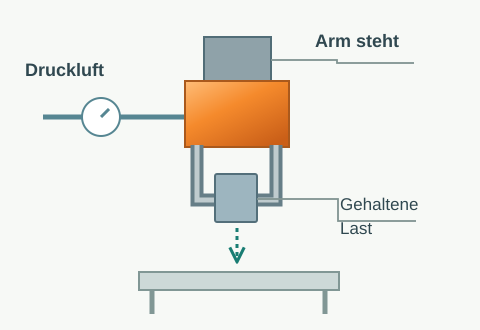
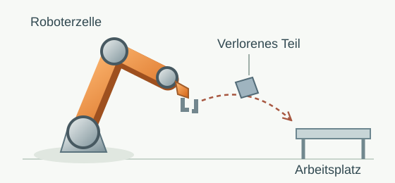

Mögliche Schadensquelle
Gefährdung
Die Bewegung des Arms kann eine Quetschung verursachen.
Robotik · Modul 4
Risiken beurteilen, eine Roboterzelle absichern und Bewegungen bewusst freigeben.

01 · Grundlagen
Ein Knickarm nimmt Metallteile aus einem Magazin und legt sie in eine Vorrichtung. Sein Greifer fährt am Tisch vorbei, während der Ellenbogen nach außen schwenkt. Eine freie TCP-Bahn schützt noch keine Person neben dem Arm.

1Arm und Vorrichtung Zwischen bewegtem Glied und festem Tisch kann eine Person gequetscht werden.
2Greifer und Werkstück Greiffinger können quetschen. Ein verlorenes Teil kann fallen oder weggeschleudert werden.
3Zugang zur Zelle Beim Nachfüllen kann eine Person in eine laufende oder unerwartet beginnende Bewegung geraten.
4Gespeicherte Energie Druckluft kann den Greifer auch dann bewegen, wenn der Roboterarm stillsteht.
Beobachte Arm, Werkzeug und Umgebung im Video. Wo könnte eine Person getroffen oder eingequetscht werden? Trenne dabei die sichtbare Bewegung von Vermutungen über die Ursache des Crashs.
Augie Ries · Geo robot crash auf YouTube öffnen
Mögliche Schadensquelle
Die Bewegung des Arms kann eine Quetschung verursachen.
Mensch ist ausgesetzt
Eine Person steht zwischen Arm und Vorrichtung – im Gefahrenbereich.
Schwere und Wahrscheinlichkeit
Wie schwer wäre die Verletzung und wie wahrscheinlich tritt sie ein? Häufiger Zugang und geringe Ausweichmöglichkeiten beeinflussen das Risiko.
Die Beurteilung umfasst alle Lebensphasen und Tätigkeiten: vom Einrichten über den Betrieb bis zu Reinigung, Wartung und Störungsbeseitigung. Auch vernünftigerweise vorhersehbare Fehlanwendung zählt dazu – etwa das Hineingreifen durch eine Materialöffnung.
Nach jeder Schutzmaßnahme erneut prüfen: Ist das Risiko ausreichend vermindert? Entstehen neue Gefährdungen?
Die Reihenfolge ist entscheidend. Ein Warnhinweis kann eine vermeidbare Quetschstelle oder eine erforderliche Schutzeinrichtung nicht ersetzen.

Stufe 1 · Vermeiden
Gefährdungen durch die Gestaltung vermeiden oder vermindern. Beispiel: eine Quetschstelle durch andere Anordnung beseitigen.

Stufe 2 · Absichern
Verbleibende Gefährdungen absichern. Beispiel: Zugang durch einen Schutzzaun verhindern und eine Schutztür überwachen.

Stufe 3 · Informieren
Über Restrisiken und erforderliche Maßnahmen informieren. Beispiel: das Verfahren zur sicheren Störungsbeseitigung beschreiben.
Die Grundnorm beschreibt das Vorgehen. Die Roboternormen konkretisieren die Anforderungen an Roboter und Anwendung. Die Not-Halt-Norm behandelt eine bestimmte Schutzfunktion.
| Norm und Gegenstand | Aufgabe und Ziel | An unserer Zelle |
|---|---|---|
| DIN EN ISO 12100Allgemeine Maschinensicherheit | Risikobeurteilung und Risikominderung systematisch durchführen: Gefährdungen erkennen und Risiken ausreichend vermindern. | Quetschstelle untersuchen und Schutzmaßnahmen in der richtigen Reihenfolge planen. |
| DIN EN ISO 10218-1Industrieroboter | Sicherheitsanforderungen an den Roboter selbst festlegen: Konstruktion, Sicherheitsfunktionen und Informationen für seine Verwendung. | Der Roboter stellt die erforderlichen Funktionen für den vorgesehenen manuellen Betrieb bereit. |
| DIN EN ISO 10218-2Roboteranwendungen und Roboterzellen | Roboter, Werkzeug, Werkstück und weitere Einrichtungen sicher integrieren; Tätigkeiten über den Lebenszyklus berücksichtigen. | Greifer, Schutztür, Materialzugang und Roboter zu einem wirksamen Schutzkonzept verbinden. |
| DIN EN ISO 13850Not-Halt-Funktion | Anforderungen an die Not-Halt-Funktion bestimmen, um tatsächliche oder drohende Notsituationen abzuwenden. | Gefährliche Bewegung ohne zusätzliche Gefährdung stillsetzen. Rücksetzen darf keinen Start auslösen. |
Die Roboternormen werden hier auf Grundlage der ISO-Ausgaben 10218-1:2025 und 10218-2:2025 eingeordnet. DIN EN ISO bezeichnet die deutsche Übernahme einer europäischen und internationalen Norm.
02 · Technische Schutzmaßnahmen
Im Automatikbetrieb setzt unsere Zelle die Metallteile selbsttätig um. Menschen müssen vor den gefährlichen Bewegungen geschützt werden. DIN EN ISO 10218-2 betrachtet dafür die gesamte Anwendung einschließlich ihrer Zugänge.

Schutzzaun, Umhausung und Schutztür bilden eine körperliche Barriere. Abstände, Höhe und Öffnungen müssen den Zugang zur Gefahr verhindern.
Rückhaltewirkung: Gegen wegfliegende Teile schützt nur eine dafür ausgelegte Barriere. Ein beliebiger Gitterzaun genügt dafür nicht automatisch.

Ein Lichtvorhang oder Laserscanner erkennt den Zugang berührungslos. Die Sicherheitsfunktion setzt die gefährliche Bewegung rechtzeitig still.
Keine Rückhaltewirkung: Lichtstrahlen halten weder Werkstücke noch Späne zurück. Auch Umgehen, Übergreifen und unbemerkter Aufenthalt müssen berücksichtigt werden.
Betrachte den Crash und überlege: Wo muss der Zugang zur Bewegung verhindert werden? Welche zusätzliche Schutzwirkung wäre nötig, falls sich dabei ein Teil löst? Begründe, was ein Lichtvorhang leisten kann und was eine geeignete Barriere leisten muss.
Christoph Sobotta · Roboter Crash auf YouTube öffnen. Aus dem Clip allein lässt sich das vollständige Schutzkonzept der Anlage nicht beurteilen.
Ein Stoppsignal beendet eine Bewegung nicht augenblicklich. Zwischen Erkennen, Reaktion der Steuerung und Stillstand vergeht Zeit. In dieser Zeit kann sich auch eine Person weiter annähern.
Türstellung überwachen
Sie verknüpft die Schutzeinrichtung mit der Maschinenfunktion: Bei offener Tür ist die gefährliche Automatikbewegung gesperrt. Öffnen löst einen Halt aus.
Tür geschlossen halten
Kann die Gefahr vor Ende des Nachlaufs erreicht werden, hält eine Zuhaltung die Tür bis zum sicheren Zustand geschlossen.

Eine Sicherheitsfunktion bewirkt bei einer festgelegten Anforderung einen sicheren Zustand, etwa den Halt bei geöffneter Tür. Danach muss ein unerwarteter Wiederanlauf verhindert werden. Im folgenden Modell bleibt der Roboter nach dem Schließen stehen.
Beobachte: Welche Handlung gibt nur frei, welche startet die Bewegung?
Tür geschlossen, Roboter steht. Die Quittierung fehlt noch.
Vor der Quittierung muss der Gefahrenbereich kontrolliert werden. Die Quittierstelle liegt außerhalb und muss die nötige Übersicht ermöglichen. Bei verdeckten Bereichen sind zusätzliche Maßnahmen erforderlich. Der anschließende Start ist eine eigene Handlung.
Eine Zusammenarbeit von Mensch und Roboter braucht ebenfalls ein geprüftes Schutzkonzept für die gesamte Anwendung. Je nach Konzept werden etwa Abstand und Geschwindigkeit überwacht oder Kräfte und Drücke begrenzt. Ein scharfkantiges Werkstück und eine Quetschstelle am Tisch bleiben dabei relevant. Die Anforderungen an kollaborative Anwendungen werden in ISO 10218-2:2025 behandelt.
03 · Betriebsarten und Eingriffe
Zum Einlernen einer Ablageposition muss eine befugte, fachkundige Person die Zelle eventuell betreten. Für diesen manuellen Einrichtbetrieb gelten andere Schutzbedingungen als für den automatischen Ablauf. Die Anforderungen an Roboter und Integration greifen dabei ineinander: DIN EN ISO 10218-1 und -2.
Automatikbetrieb
Die vorgesehenen Schutzeinrichtungen sind wirksam. Menschen bleiben außerhalb des abgesicherten Gefahrenbereichs unserer Zelle.
Manuell mit reduzierter Geschwindigkeit
Bewusst gewählte Betriebsart, sicher reduzierte Geschwindigkeit, Zustimmung und zusätzlicher Fahrbefehl wirken zusammen. Der Standort muss Quetschstellen vermeiden und Ausweichen ermöglichen.
Ein kleiner Geschwindigkeitswert im normalen Programm ist noch keine Sicherheitsfunktion. Die erforderliche Begrenzung muss sicherheitstechnisch überwacht werden. Auch langsame Bewegung kann eine Person einklemmen.
Nur die Mittelstellung erlaubt die Bewegungsfreigabe. Loslassen oder vollständiges Durchdrücken führt zum Halt. Zustimmen allein bewegt den Roboter nicht: Ein zusätzlicher Fahrbefehl ist erforderlich.
Mit Maus oder Finger gedrückt halten; per Tastatur Leertaste oder Eingabetaste halten.
Losgelassen: keine Zustimmung. Der Roboter steht.
Nach vollständigem Durchdrücken muss die Zustimmungseinrichtung zunächst ganz losgelassen werden. Beim Rückweg durch die Mittelstellung darf keine erneute Freigabe entstehen.
Im Notfall zählt die Art der Gefährdung. Die Begriffe beschreiben unterschiedliche Funktionen; aus dem roten Taster allein lässt sich ihre technische Wirkung nicht ablesen.
Gefährliche Bewegung oder Prozess
Setzt die gefährliche Bewegung oder den Prozess so schnell wie erforderlich still, ohne zusätzliche Gefährdungen zu erzeugen. Die elektrische Versorgung muss dabei nicht vollständig abgeschaltet werden.
Elektrische Gefährdung
Schaltet die betroffene elektrische Versorgung ab, um eine elektrische Gefährdung zu beseitigen. Gespeicherte Druckluft oder die Lageenergie einer gehaltenen Last verschwinden dadurch nicht.
Not-Halt ist eine ergänzende Schutzmaßnahme und ersetzt keine erforderliche Schutzeinrichtung. Der Befehl bleibt bis zum bewussten Rücksetzen wirksam. Das Rücksetzen darf keinen Wiederanlauf auslösen.

Ein Teil klemmt in unserem Greifer. Ein Halt allein schafft noch keinen sicheren Zustand für das Entfernen: Der Greifer kann sich bewegen, die Last kann fallen.
Die Störungsbeseitigung erfolgt durch befugte Personen nach dem festgelegten Verfahren. Dazu gehören das Trennen relevanter Energiequellen, das Sichern gegen Wiedereinschalten sowie das Beherrschen gespeicherter Energien.
Vor einem Druckabbau muss eine gefährdete Last gesichert werden. Der für den Eingriff erforderliche sichere Zustand ist anschließend zu prüfen.
Selbsttest
Ordne zu, wähle aus und begründe deine Entscheidung. Auswahlantworten erhalten direkt eine Rückmeldung. Halte deine Begründungen und die Risikobeurteilung in deinen eigenen Notizen fest, bevor du die Lösung aufklappst. Deine Auswahlantworten werden nicht übertragen oder dauerhaft gespeichert.
Aufgabe 1 · Zuordnen
Wähle zu jeder technischen Frage die am unmittelbarsten passende Norm. Jede der vier Normen wird einmal benötigt.
Aufgabe 2 · Auswählen und begründen

Unsere Zelle setzt jetzt schwerere Metallteile um. Die sichere Werkstückhaltung wird überprüft und konstruktiv verbessert. Für das verbleibende Risiko herausgeschleuderter Teile ist eine ergänzende Absicherung auszuwählen.
2a: die entsprechend ausgelegte geschlossene Umhausung. 2b: die mechanische Rückhaltewirkung. Ein Lichtvorhang kann einen Zutritt erkennen und einen Halt auslösen, aber keine Teile auffangen. Die Umhausung ergänzt die sichere Werkstückhaltung; sie ersetzt deren Prüfung und Verbesserung nicht.
Aufgabe 3 · Zustände beurteilen
Beurteile die drei Zustände unserer Zelle. Für B und C gilt: Der manuelle Einrichtbetrieb ist bewusst gewählt, die sicher reduzierte Geschwindigkeit wird überwacht und alle weiteren Schutzbedingungen sind erfüllt. Die Zustimmungseinrichtung wurde zuvor vollständig losgelassen.
A: gesperrt – Quittierung fehlt. B: gesperrt – Fahrbefehl fehlt. C: zulässig – Zustimmung und Fahrbefehl liegen vor; die übrigen Schutzbedingungen sind ausdrücklich erfüllt. Eine Freigabe im Einrichtbetrieb erlaubt keinen automatischen Zyklus.
Aufgabe 4 · Selbst begründen
„Das Werkstück klemmt im pneumatischen Greifer. Nach dem Not-Halt steht der Roboter. Jetzt können wir das Teil herausziehen.“
Beurteile den Vorschlag. Nenne eine verbleibende Gefährdung und eine dazu passende Schutzmaßnahme. Formuliere zuerst selbst und vergleiche anschließend mit dem Lösungsvorschlag.
Halte deine Begründung in deinen eigenen Notizen fest.
Der Vorschlag ist nicht ausreichend: Not-Halt bedeutet nicht, dass sämtliche Energien beseitigt sind.
Der Eingriff erfolgt durch befugte Personen nach dem festgelegten Verfahren; der sichere Zustand ist zu prüfen. Ein Halt allein oder das Entriegeln des Not-Halts genügt nicht.
Vergleiche deine Antwort: Hast du den Vorschlag beurteilt, eine konkrete verbleibende Gefährdung genannt und eine dazu passende Maßnahme begründet? Eine fachlich richtige Kombination genügt; dein Wortlaut darf abweichen.
Aufgabe 5 · Risikobeurteilung vertiefen
Die bisherige Zelle besitzt eine geprüfte Einhausung mit Materialtunnel und überwachter Serviceklappe. Nach dem Schließen der Klappe sind Quittierung und ein gesonderter Start erforderlich. Schutzabstände und Nachlauf wurden für die bisherige Anwendung geprüft.
Beurteile die folgenden vier Vorschläge jeweils einzeln gegenüber dieser Ausgangssituation. Die Änderungen werden nicht miteinander kombiniert. Halte für jeden Fall in deinen eigenen Notizen fest: Welche Gefährdung ist betroffen, wie verändert sich das Risiko und was folgt daraus?
Begründe anhand der Fallangaben und vergleiche anschließend mit dem Lösungsvorschlag. Die Aufgabe betrachtet ausgewählte Schritte der Risikobeurteilung nach DIN EN ISO 12100; eine Risikozahl ist nicht erforderlich.
Weniger Störungen bedeuten weniger Anlässe für Eingriffe und damit eine geringere Häufigkeit möglicher Gefährdungssituationen. Die mögliche Verletzung bei einem Eingriff wird dadurch nicht automatisch leichter. Die verbesserte Führung gehört zur inhärent sicheren Konstruktion. Unter den genannten Bedingungen ist sie sinnvoll; die vorhandenen Schutzeinrichtungen bleiben erforderlich.
Die Änderung ist im beschriebenen Schutzkonzept nicht vertretbar. Eine geschlossene Klappe bestätigt nicht, dass der Gefahrenbereich kontrolliert und der nächste Start bewusst veranlasst wurde. Die wirksame Überwachung bei offener Klappe löst das Problem des unerwarteten Wiederanlaufs nicht. Bereich kontrollieren, quittieren und anschließend gesondert starten bleiben die vorgesehenen Schritte.
Zu prüfen ist, ob die gefährliche Bewegung durch die vergrößerte Öffnung erreichbar wird. Entscheidend ist das Zusammenwirken von Öffnungsmaßen, Tunnellänge und Abstand zur Gefahr. Die unveränderte Länge allein beantwortet diese Frage nicht. Die Klappenüberwachung erfasst keinen Zugriff durch den Materialtunnel.
Bleibt die Gefahr nachweislich unerreichbar, kann das Prinzip beibehalten werden. Andernfalls muss beispielsweise die Tunnelgeometrie oder die Lage der Gefahr angepasst werden. Aus den Angaben folgt weder eine automatische Freigabe noch die zwingende Forderung nach einer völlig neuen Schutzeinrichtung.
Die zulässige Last und der erfolgreiche Haltversuch sprechen für die technische Eignung in der geprüften Situation. Sie belegen noch nicht die Sicherheit unter allen vorgesehenen Bedingungen. Eine Halbierung der Programmgeschwindigkeit lässt sich nicht pauschal gegen eine höhere Last aufrechnen.
Urteil: Das Konzept kann weiterhin geeignet sein, braucht aber passende Nachweise für die neue Last. Je nach Prüfergebnis können das bestehende Verfahren bestätigt, die Absicherung angepasst oder eine zusätzliche Lastsicherung erforderlich werden. Auch andere fachlich begründete, voneinander verschiedene Prüfpunkte sind möglich.
Selbstkontrolle: Bei A und B genügt eine klare fachliche Begründung. Bei C benennst du die entscheidende Prüfung. Bei D verknüpfst du mehrere Gefährdungen und unterscheidest zwischen einer plausiblen Vermutung und einem Nachweis.
Wähle im Druckdialog „Als PDF speichern“. Die Druckfassung enthält die Aufgaben und die Lösungen zum Selbsttest.